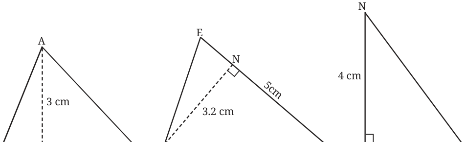
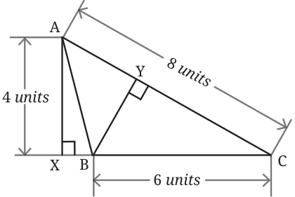
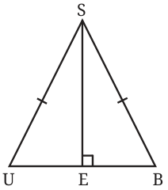
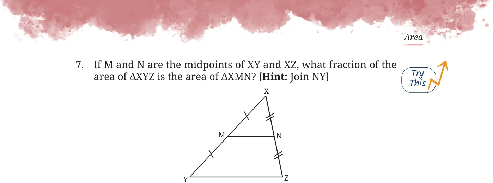

- 1.Find the areas of the following triangles:


- 2.Find the length of the altitude BY.


- 3.Find the area of \(\triangle SUB\), given that it is isosceles,
SE is perpendicular to UB, and the area of \(\triangle SEB\) is 24 sq. units.
In the Śulba-Sūtras, which are ancient Indian geometric texts that deal with the construction of altars, we can find many interesting problems on the topic of areas. When altars are built, they must have the exact prescribed shape and area. This gives rise to problems of the kind where one has to transform a given shape into another of the same area. The Śulba-Sūtras give solutions to many such problems. Such problems are also posed and solved in Euclid’s Elements. Here are two problems of this kind.
- 4.[Śulba-Sūtras] Give a method to transform a rectangle into a triangle
of equal area.
- 5.[Śulba-Sūtras] Give a method to transform a triangle into a rectangle
of equal area.
- 6.ABCD, BCEF, and BFGH are identical squares.
- (i)If the area of the red region is 49 sq. units, then what is the area
of the blue region?
- (ii)In another version of this figure, if the total area enclosed
by the blue and red regions is 180 sq. units, then what is the area of each square?

- 8.Gopal needs to carry water from the river to his water tank. He
starts from his house. What is the shortest path he can take from his house to the river and then to the water tank? Roughly recreate the map in your notebook and trace the shortest path.
River
House